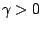
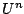
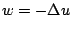

Next: About this document ...
Coupled Gauss-Seidel algorithm in multigrid mode for the
thin film equation
Stephen Langdon
Dept. of Mathematics, University of Reading
Whiteknights, PO Box 220, Reading RG6 2AX United Kingdom
s.langdon@reading.ac.uk
John W Barrett
In this talk we consider the iterative solution of a
nonlinear system arising from a finite element
discretisation of the fourth order equation
where . This
equation models a thin liquid film spreading on a solid
surface, with the height of the film. It is well known
that for nonnegative initial data, the solution remains
nonnegative for all time. However, this nonnegativity of
is not guaranteed if the equation is discretised in a naive
way. Imposing the nonnegativity of as a constraint leads
to a discrete variational inequality to be solved at each
time step. Specifically defining  to be the space of
piecewise linear functions on a uniform mesh and
to be the space of nonnegative functions in ,
given
to be the space of
piecewise linear functions on a uniform mesh and
to be the space of nonnegative functions in ,
given
 we seek
and
such that
we seek
and
such that
where  represents the time step, and
and
represent the inner product and its
trapezoidal rule discretisation respectively.
represents the time step, and
and
represent the inner product and its
trapezoidal rule discretisation respectively.
Well-posedness, stability, unique solvability, and
convergence of  to and to
 were
established by Barrett, Blowey and Garcke in 1998. To solve
the nonlinear system they used an Uzawa algorithm, for which
they were able to demonstrate convergence of
and of
, as the number of iterations
.
However, the convergence of this algorithm was found to be
extremely slow. Here, we propose instead a coupled
Gauss-Seidel algorithm in multigrid mode for the iterative
solution of the nonlinear system. Proving convergence for
the multigrid algorithm remains an open question, but
numerical results indicate mesh independent convergence to
the same solution as that achieved with the Uzawa algorithm
in most cases tested, with a greatly reduced computational
cost compared to iterating on a single grid.
Next: About this document ...
Bruce Fast
2006-03-11